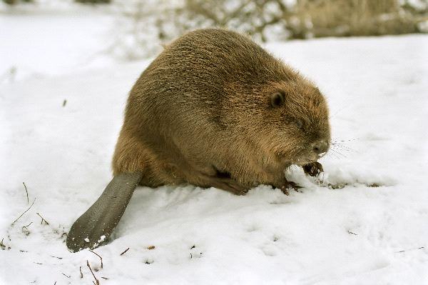
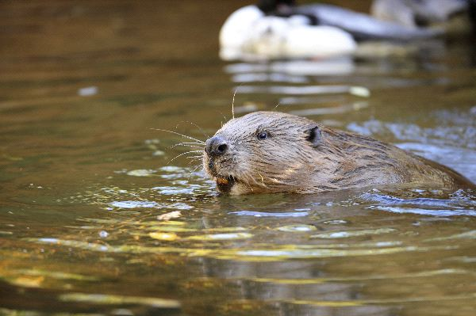

Eurasian beaver
Castor fiber
Introduction to Eurasian Beaver
The Eurasian Beaver have longer nasal bones than the North American Beaver. They also have fur that is shorter and their tail is less round. They have legs that are shorter and that is why they spend more of their time in the water. They are able to move faster in the water and not use up as much energy to do so.
Description
The color of this Beaver will vary from light brown to very dark. It all depends on their location. They have to able to blend in well with their surroundings for their own protection. They tend to be lighter in color around the face. They have small noses and very good vision as well as sense of small. They can see under the water and they can close both the nostrils and the ears so that water won’t enter them.
They have webbed feet on the back but not the front. This makes it easy for them to swim but also to grab things with the front ones. They have sharp claws that help them to dig, to climb, and to get food with. They have a tail that is flat and helps them with being able to navigate their bodies through the water when they move around.
Distribution
Europe, Russia, and Asia are all locations where the Eurasian Beaver is able to live. They enjoy being both in the water and on land. They have a thick fur coat as well as inner insulation so they can do well in all water temperatures. They spend time on land making dens out of sticks and twigs.
Behavior
Observing the Eurasian Beaver is fascinating as they often seem to be playing games. They can be relaxing on their backs floating around in the water. They are usually alone but have several others around. They will mate for life and the pairs seem to work as a team to survive and to care for their young.
Feeding
They mainly eat plants and the bark from the trees. They do eat fish in the water but most of the time they won’t exert the energy it takes to catch them. Instead, they will look for dead fish. They often feed at night and they will use their sharp teeth to help them get through the bark and the wood. The teeth grow for their lifetime so they can get too long if they don’t consume enough of that type of food.
Reproduction
Mating takes place in January and February for the Eurasian Beaver. They are usually ready to mate when they are 3 years of age. The pair will create a den where they can allow the young to be born. There can be up to 6 of them per litter but usually there will be about 3.
The young from the previous litter will still be with the family. The male and those young will move to another den. This enables the mother to focus on the needs of the new offspring. There seems to be very deep family bonds that are created among the Eurasian Beaver.
Conservation
The Eurasian Beaver is still in a recovery process of conservation. They were almost completely destroyed due to them being killed for their furs. In many locations they were completely wiped out. However, efforts involving experts allowed for them to be re-introduced to many of those parts. There is still plenty of efforts that have to continue though before this species will be able to thrive again on its own.